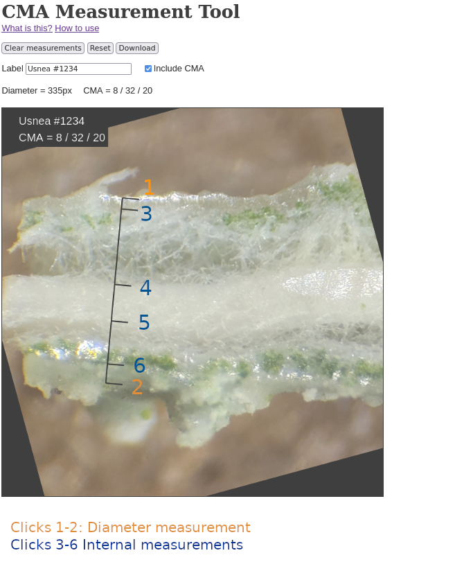

About CMA Measurement Tool
A useful characteristic for identifying Usnea species is the relative size of the cortex, medulla, and axis when viewed in cross section. This is a tool for quickly making CMA measurements and downloading annotated images.
This tool is best used on desktop, but also works on mobile. No data leaves your browser, and progress is not saved. Find a bug or have an idea for an improvement? Contact me at well1912 (at) gmail, or leave an issue on the GitHub repo! PRs are also welcome.
How to use
To make a CMA measurement, click the image to make a mark. Once six marks have been made, the CMA will be displayed.
Although they can be done in any order, making two marks that span the diameter of the measurement first allows for a more accurate measurement. Take care to make sure this measurement is exactly perpendicular to the branches.
If a mistake is made while adding measurements, the undo (↶) and redo (↷) buttons can be used (ctrl-z also works!). To clear measurements and start over, click the "Clear measurements" button. To clear the image and upload another, click the "New" button.
You can download your annotated image at this point by clicking the "Download" button. The Label field annotates what the photo is of, and the "Include CMA" option lets you toggle adding the CMA measurement on the image. To leave out the label entirely, clear the Label field.
Below illustrates the suggested measurement order: 
Making the longitudinal cut
This can be a little tricky. Here's a rough illustration of how I take CMA measurements: